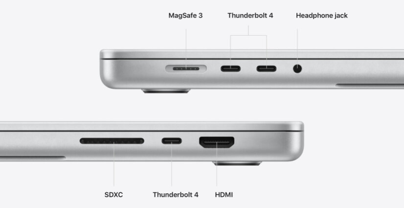

Apple Macbook Air M2 Specifications, All About it such as: Price, Processor, camera, Display
All new Macbook Air M2 is know Availabe to all who are fond of Laptops and The best feature it is that it's more lighter than the previous Macbook Air. Although, Its with the new Chip M2 which is also the best for laptops.
Apple M2 chip An ultrafast, ultracapable chip engineered to help you zip through everyday tasks and take on more intensive workflows Run multiple apps and edit thousands of photos or 4K video Up to 12x faster than fastest Intel-based MacBook Air footnote ⁴ Unified Memory Unified memory is faster and more efficient than the same amount of traditional RAM Add memory to run more apps simultaneously for faster, more fluid multitasking Can be configured with up to 24GB of memory Storage Solid-state drive (SSD) storage is the amount of space your MacBook Air has for your documents, photos, music, videos and other files Delivers exceptional performance and speed when you start up your Mac, launch apps, open files and browse libraries Can be configured with up to 2TB of storage.
Apple Macbook M2 Peak Qualities Are as follows:
- The most Quality Thiungs is that you don't Hane to deal with the Bordar on the screen. New Notch Is added to THIS MAC.
- Chipset Specification.
8-core CPU with 4 performance cores and 4 efficiency cores.
10-core GPU.
16-core Neural Engine.
100GB/s memory bandwidth.

- 13-megapixel primary camera; an 8-megapixel camera; a 5-megapixel camera, and a 2-megapixel camera
- All new boxy Design
- Especially The new Charging Port No the Type-C, All new Magnetic Charger 
Apple site
| Macbook Air M2 | Details |
|---|---|
| Pricing | $1,600 CAD |
| Battery Details | Apple Lithium-ion Batteries, up to 18 hours |
| pixals | 2000 nits |
| Chitset | M2 |
| Displaysize | 13 inches |
| Storage | 256GB, 512GB, 1TB |
| Weight | 700 Grams |
| Colors | Starlight, Midnight, Pearl White |